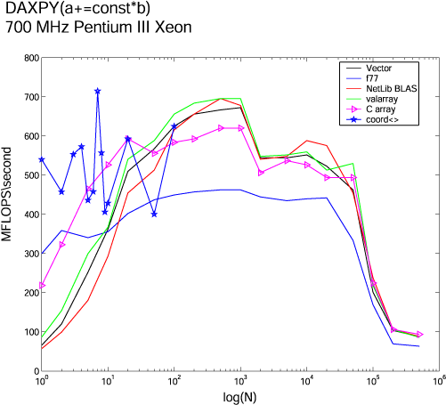
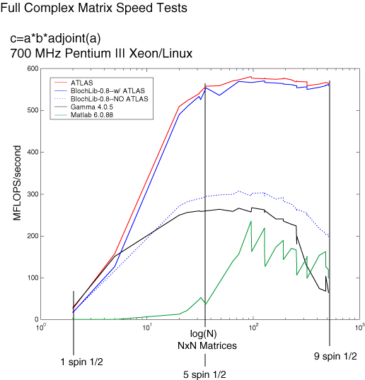

Speed Tests
|
Below are simple speed comparison tests of representative math operations
for the this library and other library packages, as well the 'quick-and-dirty'
simple code most people would program.
These tests were all performed using gcc 2.95.3 as the compiler
with the optimization options given in the "blcc"
compilation shell script (-O3 -funroll-loops -finline-functions -mpentiumpro,
etc).
All tests were run on a 700 MHz Pentium III Xenon (L2=2Mb, L1=16Kb)
processor.
ATLAS was configured as given in the README.BLAS
file
another common NMR library 'Gamma'
was compiled used as is.
Vectors...

Propagators Matrix Multiply

|
|
all material copywrite ©2002 LBL
|
|